library(spatstat)## Loading required package: spatstat.data## Loading required package: nlme## Loading required package: rpart##
## spatstat 1.64-1 (nickname: 'Help you I can, yes!')
## For an introduction to spatstat, type 'beginner'##
## Note: spatstat version 1.64-1 is out of date by more than 7 months; we recommend upgrading to the latest version.library(here)## here() starts at /Users/huoanni/OneDrive - University College London/GIS/temporal charge pointslibrary(sp)
library(rgeos)## rgeos version: 0.5-6, (SVN revision (unknown))
## GEOS runtime version: 3.8.1-CAPI-1.13.3
## Linking to sp version: 1.4-4
## Polygon checking: TRUElibrary(maptools)## Checking rgeos availability: TRUElibrary(GISTools)## Loading required package: RColorBrewer## Loading required package: MASS##
## Attaching package: 'MASS'## The following object is masked from 'package:spatstat':
##
## arealibrary(tmap)
library(sf)## Linking to GEOS 3.8.1, GDAL 3.2.0, PROJ 7.2.0library(geojson)##
## Attaching package: 'geojson'## The following object is masked from 'package:graphics':
##
## polygonlibrary(geojsonio)##
## Attaching package: 'geojsonio'## The following object is masked from 'package:base':
##
## prettylibrary(tmaptools)
library(tidyverse)## Registered S3 method overwritten by 'cli':
## method from
## print.boxx spatstat## ── Attaching packages ─────────────────────────────────────── tidyverse 1.3.0 ──## ✓ ggplot2 3.3.2 ✓ purrr 0.3.4
## ✓ tibble 3.0.4 ✓ dplyr 1.0.2
## ✓ tidyr 1.1.2 ✓ stringr 1.4.0
## ✓ readr 1.4.0 ✓ forcats 0.5.0## ── Conflicts ────────────────────────────────────────── tidyverse_conflicts() ──
## x dplyr::collapse() masks nlme::collapse()
## x dplyr::filter() masks stats::filter()
## x dplyr::lag() masks stats::lag()
## x dplyr::select() masks MASS::select()library(spdep)## Loading required package: spData## To access larger datasets in this package, install the spDataLarge
## package with: `install.packages('spDataLarge',
## repos='https://nowosad.github.io/drat/', type='source')`library(ggplot2)
library(plotly)##
## Attaching package: 'plotly'## The following object is masked from 'package:ggplot2':
##
## last_plot## The following object is masked from 'package:MASS':
##
## select## The following object is masked from 'package:stats':
##
## filter## The following object is masked from 'package:graphics':
##
## layoutlibrary(RColorBrewer)charge <- read_csv("national-charge-point-registry.csv")##
## ── Column specification ────────────────────────────────────────────────────────
## cols(
## .default = col_logical(),
## chargeDeviceID = col_character(),
## reference = col_character(),
## name = col_character(),
## latitude = col_double(),
## longitude = col_double(),
## buildingName = col_character(),
## buildingNumber = col_character(),
## thoroughfare = col_character(),
## street = col_character(),
## doubleDependantLocality = col_character(),
## dependantLocality = col_character(),
## town = col_character(),
## county = col_character(),
## postcode = col_character(),
## countryCode = col_character(),
## locationLongDescription = col_character(),
## deviceManufacturer = col_character(),
## deviceOwnerName = col_character(),
## deviceOwnerWebsite = col_character(),
## deviceOwnerTelephoneNo = col_character()
## # ... with 69 more columns
## )
## ℹ Use `spec()` for the full column specifications.## Warning: 15281 parsing failures.
## row col expected actual file
## 136 dateUpdated valid date 0000-00-00 00:00:00 'national-charge-point-registry.csv'
## 139 dateUpdated valid date 0000-00-00 00:00:00 'national-charge-point-registry.csv'
## 140 dateUpdated valid date 0000-00-00 00:00:00 'national-charge-point-registry.csv'
## 144 dateUpdated valid date 0000-00-00 00:00:00 'national-charge-point-registry.csv'
## 145 dateUpdated valid date 0000-00-00 00:00:00 'national-charge-point-registry.csv'
## ... ........... .......... ................... ....................................
## See problems(...) for more details.summary(charge$chargeDeviceStatus)## Length Class Mode
## 12332 character characterlondonwards <- st_read("ESRI/London_Ward_CityMerged.shp") %>%
st_transform(., 27700)## Reading layer `London_Ward_CityMerged' from data source `/Users/huoanni/OneDrive - University College London/GIS/temporal charge points/ESRI/London_Ward_CityMerged.shp' using driver `ESRI Shapefile'
## Simple feature collection with 625 features and 7 fields
## geometry type: POLYGON
## dimension: XY
## bbox: xmin: 503568.2 ymin: 155850.8 xmax: 561957.5 ymax: 200933.9
## projected CRS: OSGB 1936 / British National Gridlondon_outline <- londonwards %>%
summarise(area = sum(HECTARES))chargepoints <- charge [charge$chargeDeviceStatus=="In service" & !is.na(charge$latitude) & !is.na(charge$longitude),] filterfun <- function(end){
enddate <- end
filterpoints <- chargepoints %>%
filter(chargepoints$dateCreated<=enddate)
return(filterpoints)
}londonPfun <- function(filteredpoints){
transpoints <- filteredpoints %>%
select(., c(3,4,5)) %>%
st_as_sf(., coords = c("longitude", "latitude"),crs = 4326) %>%
st_transform(., 27700) %>%
distinct()
charge_london <- st_intersects(london_outline, transpoints)
londonpoints <- transpoints[unlist(charge_london),]
return(londonpoints)
}filterpoints14 <- filterfun("2014-12-31")
londonpoints2014 <- londonPfun(filterpoints14)
filterpoints17 <- filterfun("2017-12-31")
londonpoints2017 <- londonPfun(filterpoints17)
filterpoints20 <- filterfun("2020-12-31")
londonpoints2020 <- londonPfun(filterpoints20)tmap_mode("plot")## tmap mode set to plottingtm1 <- tm_shape(london_outline) +
tm_fill() +
tm_shape(londonpoints2014) +
tm_dots(col = "red", size = .01)+
tm_layout(frame=FALSE)+
tm_credits("(a)", position=c(0,0.85), size=1)
tm2 <- tm_shape(london_outline) +
tm_fill() +
tm_shape(londonpoints2017) +
tm_dots(col = "red", size = .01)+
tm_layout(frame=FALSE)+
tm_credits("(b)", position=c(0,0.85), size=1)
tm3 <- tm_shape(london_outline) +
tm_fill() +
tm_shape(londonpoints2020) +
tm_dots(col = "red", size = .01)+
tm_layout(frame=FALSE)+
tm_credits("(c)", position=c(0,0.85), size=1)
t <- tmap_arrange(tm1, tm2, tm3, ncol=3)
t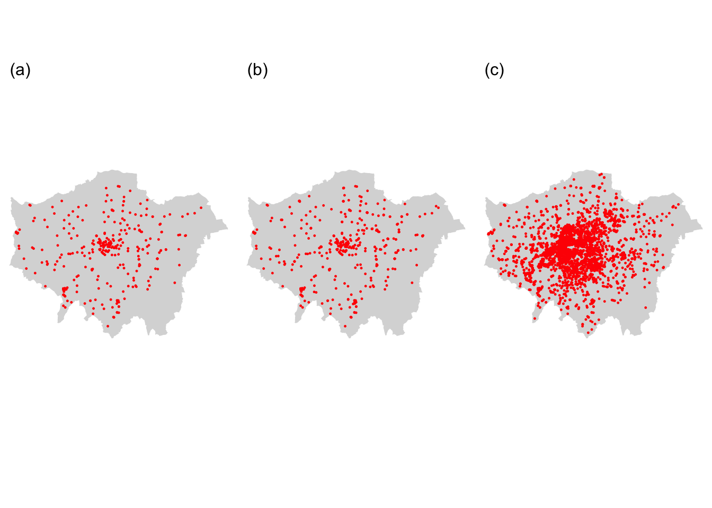
tmap_save(t, 'london charge points.png')## Map saved to /Users/huoanni/OneDrive - University College London/GIS/temporal charge points/london charge points.png## Resolution: 2100 by 2100 pixels## Size: 7 by 7 inches (300 dpi)# get coordinates from sf object -> ggplot2 format
coordsfun <- function(londonpoints, year){
charge_points_coords <- matrix(unlist(londonpoints$geometry),ncol=2,byrow=T) %>%
as.data.frame() %>%
na.omit() %>%
mutate(year=year)
return(charge_points_coords)
}
# inspect
charge_points_coords14 <- coordsfun(londonpoints2014, "2014")
head(charge_points_coords14)## V1 V2 year
## 1 541295 172229.1 2014
## 2 519521 183884.1 2014
## 3 528985 180636.0 2014
## 4 525229 165919.0 2014
## 5 530829 192766.1 2014
## 6 513796 175801.1 2014charge_points_coords14 <- coordsfun(londonpoints2014, "2014")
charge_points_coords17 <- coordsfun(londonpoints2017, "2017")
charge_points_coords20 <- coordsfun(londonpoints2020, "2020")
charge_points_ggplot <- rbind(charge_points_coords14,
charge_points_coords17,
charge_points_coords20)class(london_outline)## [1] "sf" "data.frame"# methods(class = "sf")
df <- as.data.frame(st_coordinates(london_outline))
class(df)## [1] "data.frame"ggplot()+
geom_polygon(data=df, aes(X, Y, group=L1))+
coord_quickmap()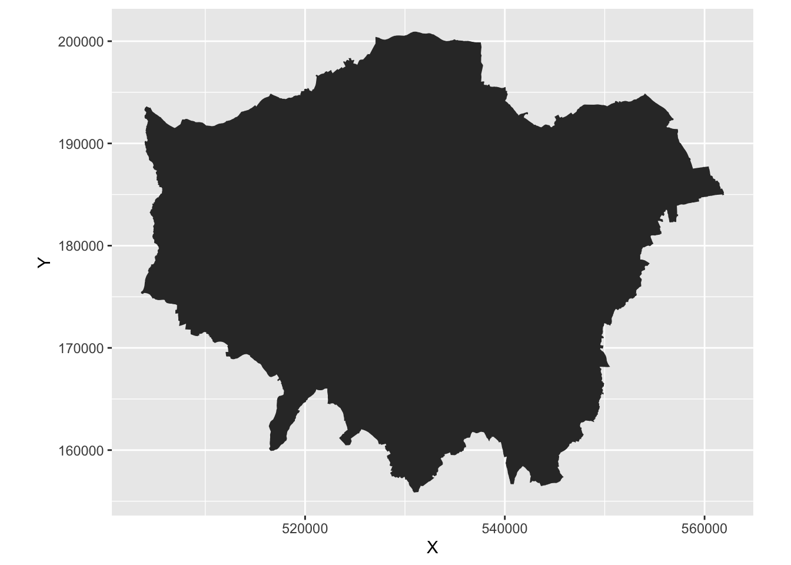
ggplot(charge_points_ggplot, aes(x=V1, y=V2, group=year)) +
geom_hex(bins=50, na.rm=TRUE) +
geom_polygon(data=df, fill=NA,
color="black", size=.2,
aes(X, Y, group=L1)) +
labs(fill = "charge point count \n",
title = "Charge Points in London \n") +
scale_fill_continuous(high=brewer.pal(7, "Reds")[7],
low=brewer.pal(7, "Reds")[1]) +
xlab(NULL)+
ylab(NULL)+
scale_x_discrete()+
scale_y_discrete()+
scale_colour_gradient()+
facet_wrap(~ year, ncol = 2)+
theme_minimal()+
theme(strip.text = element_text(size=11),
legend.key.size = unit(11, "pt"),
legend.text = element_text(size=8),
legend.title = element_text(size=11))+
coord_quickmap()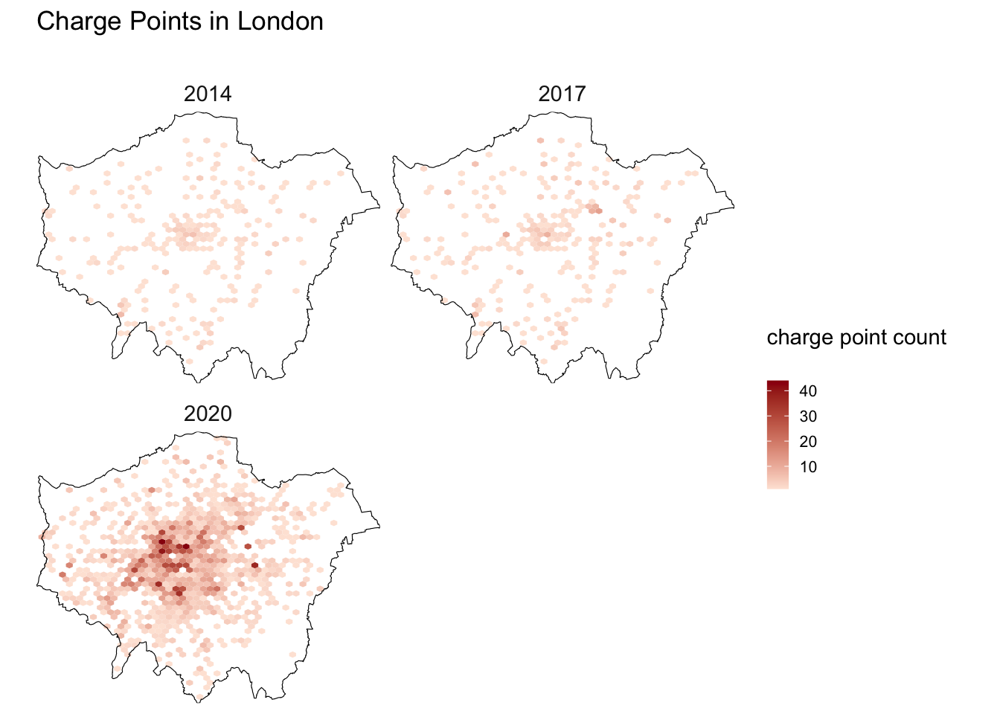
ggsave("charge points facet wrap.jpg")## Saving 7 x 5 in image# transform sf to sp
london_sp <- as(londonwards,'Spatial')## Warning in showSRID(uprojargs, format = "PROJ", multiline = "NO", prefer_proj
## = prefer_proj): Discarded datum Unknown based on Airy 1830 ellipsoid in CRS
## definition## Warning in showSRID(SRS_string, format = "PROJ", multiline = "NO", prefer_proj =
## prefer_proj): Discarded datum OSGB 1936 in CRS definition# get the window of observation using maptools package
window <- as.owin.SpatialPolygons(london_sp)
# inspect
window## window: polygonal boundary
## enclosing rectangle: [503568.2, 561957.5] x [155850.8, 200933.9] units# create ppp object
charge_ppp <- ppp(x=charge_points_coords20[,1],
y=charge_points_coords20[,2],
window=window,check=T)
# inspect
plot(charge_ppp)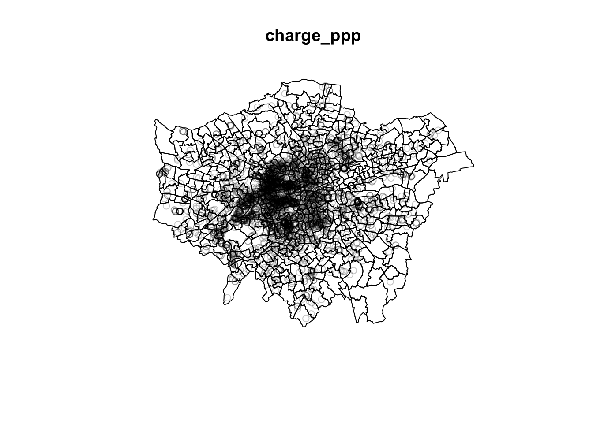
# check for duplicates
any(duplicated(charge_ppp))## [1] FALSE# count the number of duplicated points
sum(multiplicity(charge_ppp) > 1)## [1] 0# get the average distance to the first, second, ..., the hundredth, nearest neighbour
charge_ann <- apply(nndist(charge_ppp, k=1:100),2,FUN=mean)
# plot the results
plot(charge_ann ~ seq(1:100))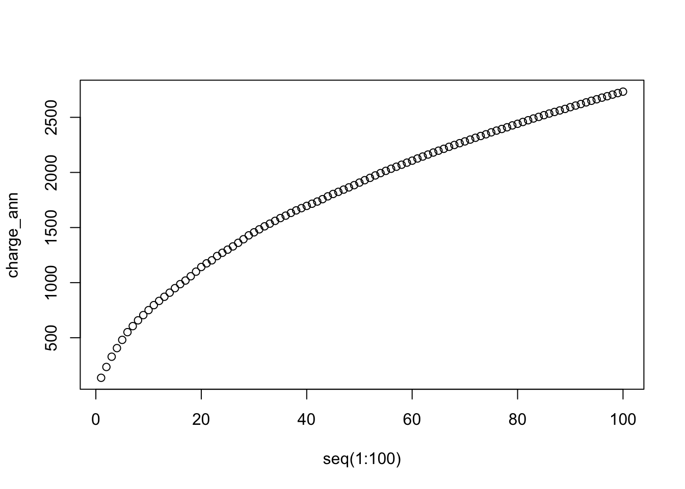
# calculate Ripley's K for charge locations, maximum radius of 4 kilometers
plot(Kest(charge_ppp,correction='border',rmax=2000))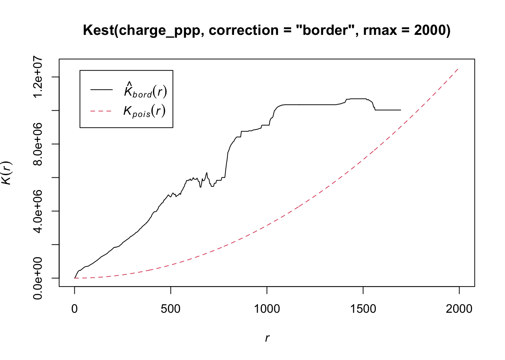
# create and plot a completely spatially random point pattern of the same size as charge points data
plot(rpoispp(3817))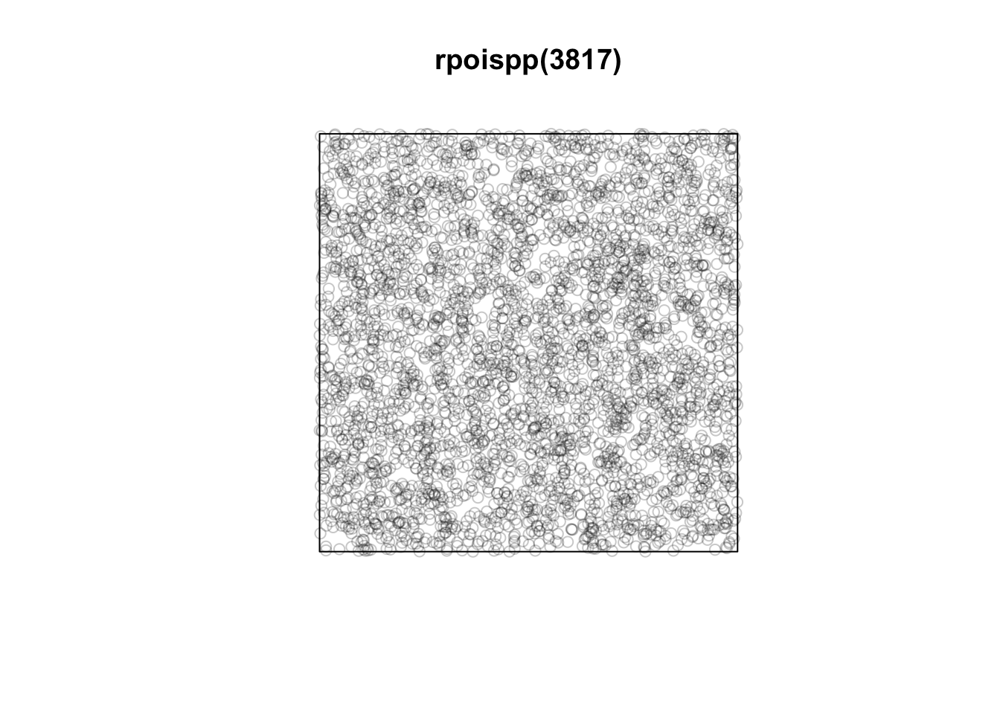
# chi-square between observed pattern and Poisson sampled points
quadrat.test(charge_ppp,nx=15,ny=15)## Warning: Some expected counts are small; chi^2 approximation may be inaccurate##
## Chi-squared test of CSR using quadrat counts
##
## data: charge_ppp
## X2 = 10959, df = 164, p-value < 2.2e-16
## alternative hypothesis: two.sided
##
## Quadrats: 165 tiles (irregular windows)# kernel density estimation with a 1000 metre bandwidth
plot(density.ppp(charge_ppp,sigma=1000))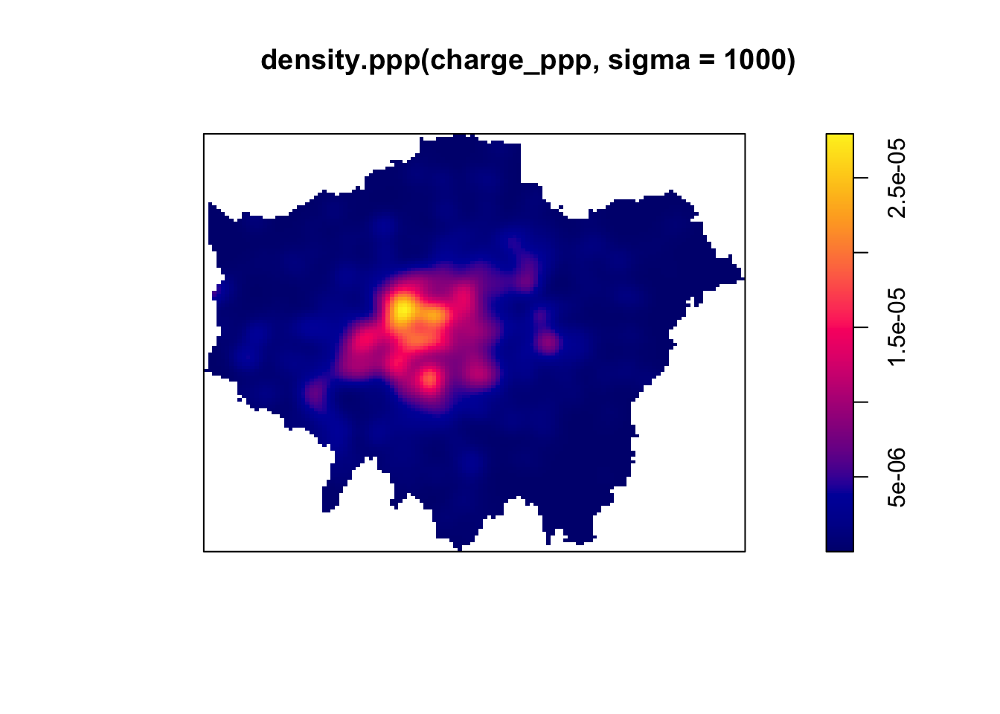
library(fpc)# Run dbscan's DB-Scan function with eps and minPts set as follows
chargepoints_dbscan <- fpc::dbscan(charge_points_coords20[1:2], eps = 3000, MinPts = 200)
# Plot our clusters and points - note the plotting code for the dbscan plot is different to that of fpc
plot(chargepoints_dbscan,
londonpoints2020,
main = "DBSCAN for charge points")
plot(london_outline$geometry, add=T)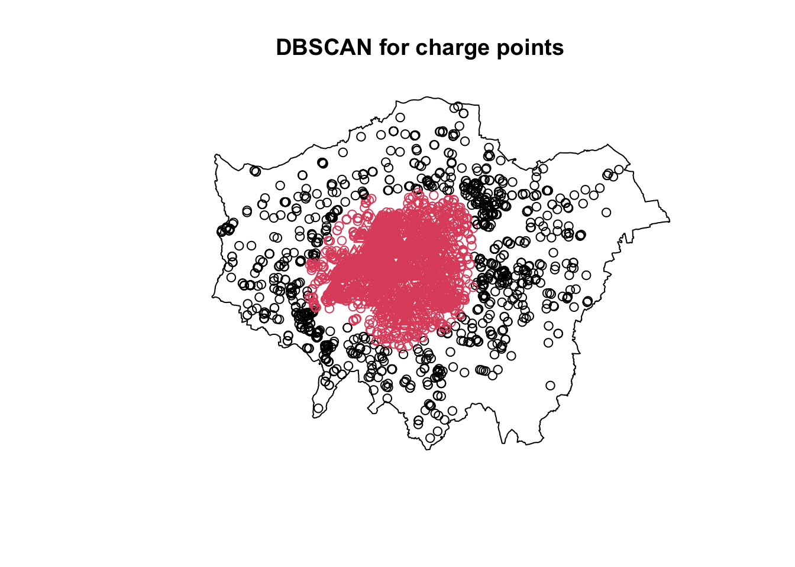
library(dbscan)##
## Attaching package: 'dbscan'## The following object is masked from 'package:fpc':
##
## dbscancharge_points_coords20[1:2]%>%
dbscan::kNNdistplot(.,k=4)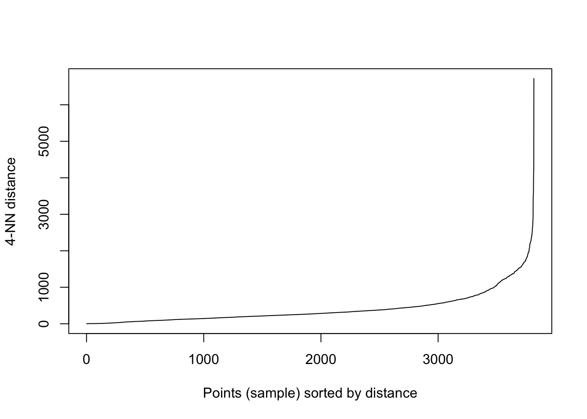
pointsjoinedfun <- function(londonpointsyear){
londonpointsyear <- londonpointsyear
charge_points_ward <- londonpointsyear[londonwards,]
points_wards <- londonwards%>%
st_join(charge_points_ward)%>%
add_count(NAME)%>%
janitor::clean_names()%>%
#then density of the points per ward
mutate(density=(n/hectares)*1000) %>%
mutate(id=1) %>%
mutate(sumpoints=aggregate(n~id,.,FUN=sum)) %>%
mutate(percentage=((n/sumpoints[1, 2]))*100) %>%
#select density and some other variables
dplyr::select(density, percentage, name, gss_code, n) %>%
distinct(., gss_code, .keep_all = TRUE)
# same quick choropleth map
points_wards <- points_wards %>%
group_by(gss_code) %>%
summarise(density=first(density),
percentage=first(percentage),
wardname=first(name),
chargepointcount= first(n))
return(points_wards)
}# test
percent_ward14 <- pointsjoinedfun(londonpoints2014)## `summarise()` ungrouping output (override with `.groups` argument)head(percent_ward14)## Simple feature collection with 6 features and 5 fields
## geometry type: POLYGON
## dimension: XY
## bbox: xmin: 543417.3 ymin: 183488.5 xmax: 551944.6 ymax: 191137.3
## projected CRS: OSGB 1936 / British National Grid
## # A tibble: 6 x 6
## gss_code density percentage wardname chargepointcount
## <chr> <dbl> <dbl> <chr> <int>
## 1 E050000… 23.4 0.221 Abbey 3
## 2 E050000… 7.33 0.0737 Alibon 1
## 3 E050000… 7.76 0.0737 Becontr… 1
## 4 E050000… 2.95 0.0737 Chadwel… 1
## 5 E050000… 2.90 0.0737 Eastbro… 1
## 6 E050000… 6.95 0.0737 Eastbury 1
## # … with 1 more variable: geometry <POLYGON [m]>densityfun <- function(londonpointsyear, number){
points_wards <- pointsjoinedfun(londonpointsyear)
breaks = c(0, 20, 30, 40, 50, 60, 200, 400, +Inf)
tm <- tm_shape(points_wards) +
tm_polygons("density",
breaks=breaks,
palette=RColorBrewer::brewer.pal(8, "YlOrRd"),
midpoint=NA) +
tm_legend(show=FALSE)+
tm_layout(frame=FALSE)+
tm_credits(number, position=c(0,0.85), size=1)
return(tm)
}legendfun <- function(londonpointsyear){
points_wards <- pointsjoinedfun(londonpointsyear)
breaks = c(0, 20, 30, 40, 50, 60, 200, 400, +Inf)
legend <- tm_shape(points_wards) +
tm_polygons("density",
breaks=breaks,
palette=RColorBrewer::brewer.pal(8, "YlOrRd"),
title="Density of Charge Points in London \n(per thousand hectare)") +
tm_scale_bar(position=c(0.2,0.04), text.size=0.6)+
tm_compass(north=0, position=c(0.65,0.2))+
tm_layout(title = "Charge Points Density Trend",
legend.title.size=1,
legend.text.size = 0.6,
legend.only = TRUE,
legend.position=c(0.2,0.25),asp=0.1)
return(legend)
}tm1 <- densityfun(londonpoints2014, "a)")## `summarise()` ungrouping output (override with `.groups` argument)tm2 <- densityfun(londonpoints2017, "b)")## `summarise()` ungrouping output (override with `.groups` argument)tm3 <- densityfun(londonpoints2020, "c)")## `summarise()` ungrouping output (override with `.groups` argument)legend <- legendfun(londonpoints2020)## `summarise()` ungrouping output (override with `.groups` argument)t_density <- tmap_arrange(tm1, tm2, tm3, legend, ncol=2)
t_density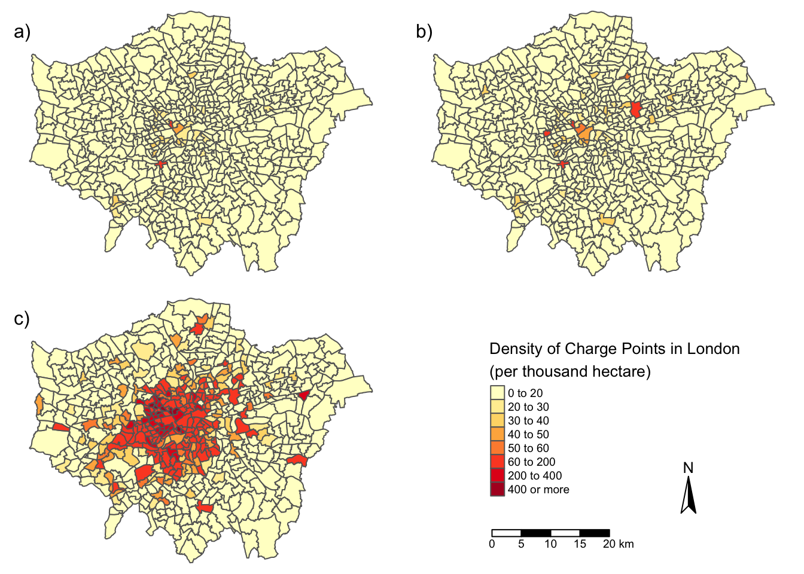
tmap_save(t_density, 'london charge points density.png')## Map saved to /Users/huoanni/OneDrive - University College London/GIS/temporal charge points/london charge points density.png## Resolution: 2100 by 2100 pixels## Size: 7 by 7 inches (300 dpi)percentfun <- function(londonpointsyear, number){
points_wards <- pointsjoinedfun(londonpointsyear)
breaks = c(0, 0.05, 0.1, 0.15, 0.2, 0.3, 0.5, 0.7, +Inf)
tm <- tm_shape(points_wards) +
tm_polygons("percentage",
breaks=breaks,
palette=RColorBrewer::brewer.pal(8, "YlOrRd"),
midpoint=NA) +
tm_legend(show=FALSE)+
tm_layout(frame=FALSE)+
tm_credits(number, position=c(0,0.85), size=1)
return(tm)
}legendpfun <- function(londonpointsyear){
points_wards <- pointsjoinedfun(londonpointsyear)
breaks = c(0, 0.05, 0.1, 0.15, 0.2, 0.3, 0.5, 0.7, +Inf)
legend <- tm_shape(points_wards) +
tm_polygons("percentage",
breaks=breaks,
palette=RColorBrewer::brewer.pal(8, "YlOrRd"),
title="Percentage of Charge Points in London \n(by wards)") +
tm_scale_bar(position=c(0.2,0.04), text.size=0.6)+
tm_compass(north=0, position=c(0.65,0.2))+
tm_layout(title = "Charge Points Distribution Trend",
legend.title.size=1,
legend.text.size = 0.6,
legend.only = TRUE,
legend.position=c(0.2,0.25),asp=0.1)
return(legend)
}p1 <- percentfun(londonpoints2014, "a)")## `summarise()` ungrouping output (override with `.groups` argument)p2 <- percentfun(londonpoints2017, "b)")## `summarise()` ungrouping output (override with `.groups` argument)p3 <- percentfun(londonpoints2020, "c)")## `summarise()` ungrouping output (override with `.groups` argument)legendp <- legendpfun(londonpoints2020)## `summarise()` ungrouping output (override with `.groups` argument)percentage <- tmap_arrange(p1, p2, p3, legendp, ncol=2)
percentage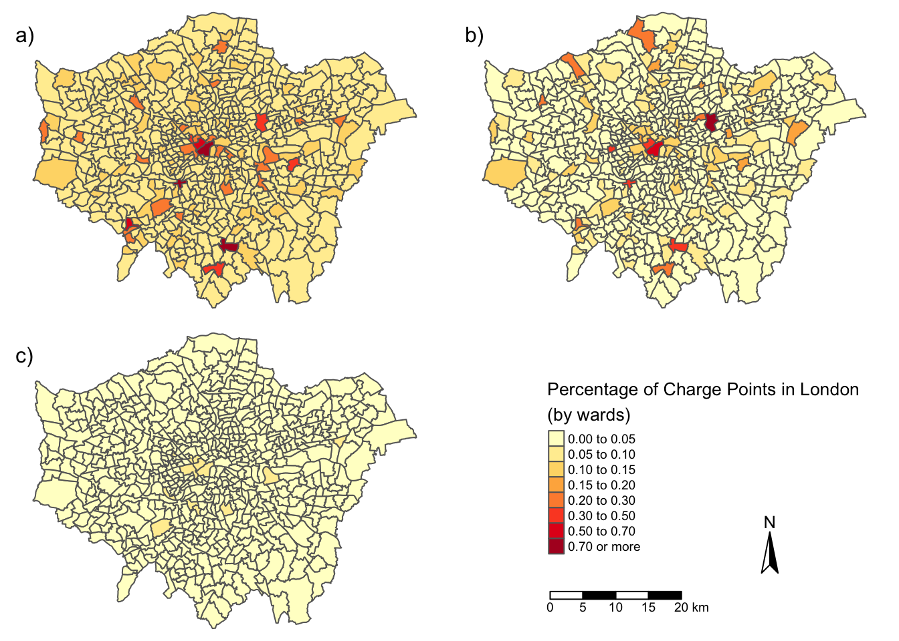
tmap_save(percentage, 'Charge Points Distribution Trend.png')## Map saved to /Users/huoanni/OneDrive - University College London/GIS/temporal charge points/Charge Points Distribution Trend.png## Resolution: 2100 by 2100 pixels## Size: 7 by 7 inches (300 dpi)# library(spdep)
# First calculate the centroids of all Wards in London
coordsWfun <- function(londonpointsyear){
points_wards <- pointsjoinedfun(londonpointsyear)
coordsW <- points_wards %>%
st_centroid() %>%
st_geometry()
}# test
coordsW <- coordsWfun(londonpoints2020)## `summarise()` ungrouping output (override with `.groups` argument)## Warning in st_centroid.sf(.): st_centroid assumes attributes are constant over
## geometries of xplot(coordsW,axes=TRUE)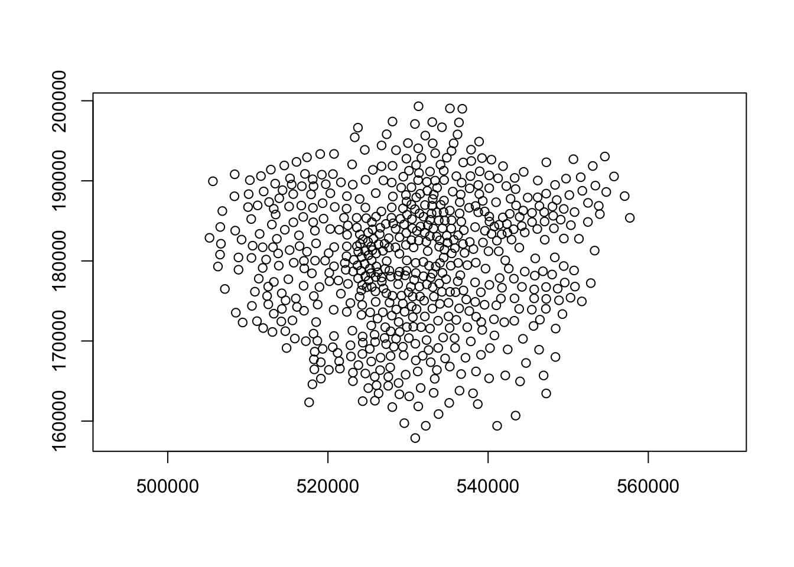
#create a neighbours list
ward_nbfun <- function(londonpointsyear){
points_wards <- pointsjoinedfun(londonpointsyear)
ward_nb <- points_wards %>%
poly2nb(., queen=T)
return(ward_nb)
}# test
ward_nb20 <- ward_nbfun(londonpoints2020)## `summarise()` ungrouping output (override with `.groups` argument)plot(ward_nb20, st_geometry(coordsW), col="red")
# add a map underneath
points_wards <- pointsjoinedfun(londonpoints2020) ## `summarise()` ungrouping output (override with `.groups` argument)plot(points_wards$geometry, add=T)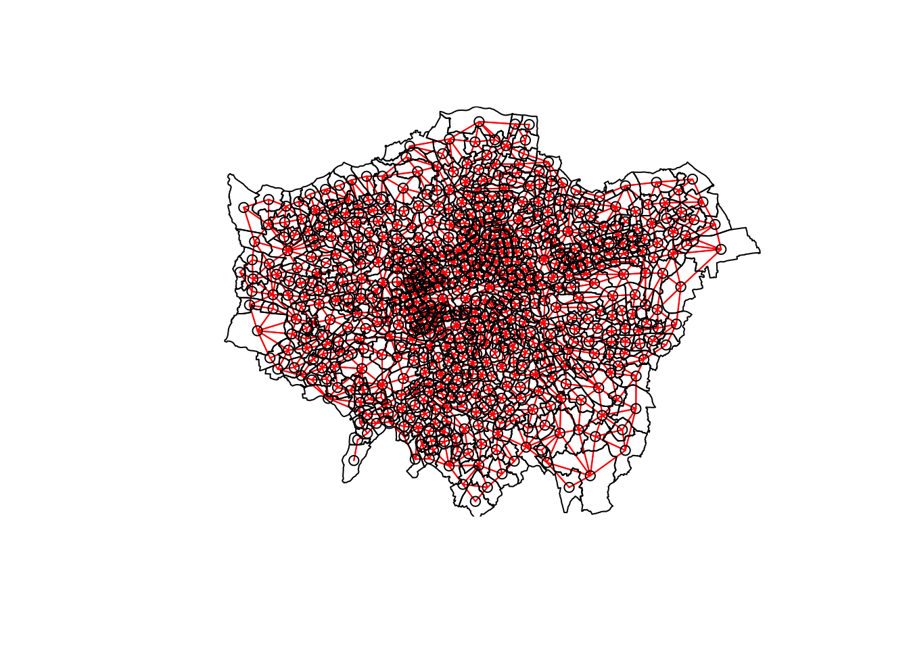
#create a spatial weights object from these weights
ward_lwfun <- function(londonpointsyear){
ward_lw <- ward_nbfun(londonpointsyear) %>%
nb2listw(., style="C")
return(ward_lw)
}# test
ward_lw20 <- ward_lwfun(londonpoints2020)## `summarise()` ungrouping output (override with `.groups` argument)head(ward_lw20$neighbours)## [[1]]
## [1] 6 7 10 462 468 482
##
## [[2]]
## [1] 5 8 9 11 12 13 16
##
## [[3]]
## [1] 10 11 12 15 480 483
##
## [[4]]
## [1] 17 281 291 470 473 481
##
## [[5]]
## [1] 2 9 16 281 283 290
##
## [[6]]
## [1] 1 7 8 10 11 14I_ward_globalfun <- function(londonpointsyear){
ward_lw <- ward_lwfun(londonpointsyear)
I_ward_global <- londonpointsyear %>%
pointsjoinedfun(.) %>%
pull(density) %>%
as.vector()%>% # Converts a distributed matrix into a non-distributed vector
moran.test(., ward_lw) # density <-> spatial (similar or not)
return(I_ward_global)
}I_ward_global14 <- I_ward_globalfun(londonpoints2014)## `summarise()` ungrouping output (override with `.groups` argument)
## `summarise()` ungrouping output (override with `.groups` argument)I_ward_global17 <- I_ward_globalfun(londonpoints2017)## `summarise()` ungrouping output (override with `.groups` argument)
## `summarise()` ungrouping output (override with `.groups` argument)I_ward_global20 <- I_ward_globalfun(londonpoints2020)## `summarise()` ungrouping output (override with `.groups` argument)
## `summarise()` ungrouping output (override with `.groups` argument)I_ward_global14##
## Moran I test under randomisation
##
## data: .
## weights: ward_lw
##
## Moran I statistic standard deviate = 17.811, p-value < 2.2e-16
## alternative hypothesis: greater
## sample estimates:
## Moran I statistic Expectation Variance
## 0.4040742881 -0.0016025641 0.0005188088I_ward_global17##
## Moran I test under randomisation
##
## data: .
## weights: ward_lw
##
## Moran I statistic standard deviate = 11.683, p-value < 2.2e-16
## alternative hypothesis: greater
## sample estimates:
## Moran I statistic Expectation Variance
## 0.2621588029 -0.0016025641 0.0005097073I_ward_global20##
## Moran I test under randomisation
##
## data: .
## weights: ward_lw
##
## Moran I statistic standard deviate = 25.345, p-value < 2.2e-16
## alternative hypothesis: greater
## sample estimates:
## Moran I statistic Expectation Variance
## 0.579937112 -0.001602564 0.000526483ward_lw20 <- ward_lwfun(londonpoints2020)## `summarise()` ungrouping output (override with `.groups` argument) I_ward_local_count <- londonpoints2020 %>%
pointsjoinedfun(.) %>%
pull(chargepointcount) %>%
as.vector()%>%
localmoran(., ward_lw20) %>%
as_tibble()## `summarise()` ungrouping output (override with `.groups` argument) I_ward_local_density <- londonpoints2020 %>%
pointsjoinedfun(.) %>%
pull(density) %>%
as.vector()%>%
localmoran(., ward_lw20) %>%
as_tibble()## `summarise()` ungrouping output (override with `.groups` argument)slice_head(I_ward_local_count, n=5)## # A tibble: 5 x 5
## Ii E.Ii Var.Ii Z.Ii `Pr(z > 0)`
## <localmrn> <localmrn> <localmrn> <localmrn> <localmrn>
## 1 -0.0152550 -0.001633048 0.1694194 -0.03309466 0.5132004
## 2 -0.1351878 -0.001905222 0.1973404 -0.30003036 0.6179230
## 3 0.4127932 -0.001633048 0.1694194 1.00685228 0.1570029
## 4 0.3218993 -0.001633048 0.1694194 0.78602481 0.2159265
## 5 -0.1455548 -0.001633048 0.1694194 -0.34965929 0.6367028slice_head(I_ward_local_density, n=5)## # A tibble: 5 x 5
## Ii E.Ii Var.Ii Z.Ii `Pr(z > 0)`
## <localmrn> <localmrn> <localmrn> <localmrn> <localmrn>
## 1 -0.02311287 -0.001633048 0.1675912 -0.05246928 0.5209226
## 2 0.09282148 -0.001905222 0.1952145 0.21439584 0.4151192
## 3 0.25021517 -0.001633048 0.1675912 0.61519570 0.2692127
## 4 0.27698598 -0.001633048 0.1675912 0.68058939 0.2480657
## 5 0.07334936 -0.001633048 0.1675912 0.18316134 0.4273357# use the local moran function to generate I for each ward in the city
I_ward_localfun <- function(londonpointsyear){
ward_lw <- ward_lwfun(londonpointsyear)
I_ward_local_count <- londonpointsyear %>%
pointsjoinedfun(.) %>%
pull(chargepointcount) %>%
as.vector()%>%
localmoran(., ward_lw) %>%
as_tibble()
I_ward_local_density <- londonpointsyear %>%
pointsjoinedfun(.) %>%
pull(density) %>%
as.vector()%>%
localmoran(., ward_lw) %>%
as_tibble()
tm_local_moran <- londonpointsyear %>%
pointsjoinedfun(.) %>%
mutate(charge_count_I = as.numeric(I_ward_local_count$Ii))%>%
mutate(charge_count_Iz =as.numeric(I_ward_local_count$Z.Ii))%>%
mutate(density_I =as.numeric(I_ward_local_density$Ii))%>%
mutate(density_Iz =as.numeric(I_ward_local_density$Z.Ii))
return(tm_local_moran)
}tmap_local_moranfun <- function(londonpointsyear, number){
breaks1<-c(-1000,-2.58,-1.96,-1.65,1.65,1.96,2.58,1000)
MoranColours<- rev(brewer.pal(8, "RdBu"))
tm_local_moran <- I_ward_localfun(londonpointsyear)
tmap <- tm_shape(tm_local_moran) +
tm_polygons("charge_count_Iz",
style="fixed",
breaks=breaks1,
palette=MoranColours,
midpoint=NA)+
tm_legend(show=FALSE)+
tm_layout(frame=FALSE)+
tm_credits(number, position=c(0,0.85), size=1)
return(tmap)
}tmap_moranlegendfun <- function(londonpointsyear){
breaks1<-c(-1000,-2.58,-1.96,-1.65,1.65,1.96,2.58,1000)
MoranColours<- rev(brewer.pal(8, "RdBu"))
tm_local_moran <- I_ward_localfun(londonpointsyear)
legend <- tm_shape(tm_local_moran) +
tm_polygons("charge_count_Iz",
breaks=breaks1,
palette=MoranColours,
title="Local Moran's I, Charge Points in London") +
tm_scale_bar(position=c(0.2,0.04), text.size=0.6)+
tm_compass(north=0, position=c(0.65,0.2))+
tm_layout(title = "Charge Points Local Moran's I",
legend.title.size=1,
legend.text.size = 0.6,
legend.only = TRUE,
legend.position=c(0.2,0.25),asp=0.1)
return(legend)
}tm_local_moran14 <- tmap_local_moranfun(londonpoints2014, "a)")## `summarise()` ungrouping output (override with `.groups` argument)
## `summarise()` ungrouping output (override with `.groups` argument)
## `summarise()` ungrouping output (override with `.groups` argument)
## `summarise()` ungrouping output (override with `.groups` argument)tm_local_moran17 <- tmap_local_moranfun(londonpoints2017, "b)")## `summarise()` ungrouping output (override with `.groups` argument)
## `summarise()` ungrouping output (override with `.groups` argument)
## `summarise()` ungrouping output (override with `.groups` argument)
## `summarise()` ungrouping output (override with `.groups` argument)tm_local_moran20 <- tmap_local_moranfun(londonpoints2020, "c)")## `summarise()` ungrouping output (override with `.groups` argument)
## `summarise()` ungrouping output (override with `.groups` argument)
## `summarise()` ungrouping output (override with `.groups` argument)
## `summarise()` ungrouping output (override with `.groups` argument)moran_legend <- tmap_moranlegendfun(londonpoints2020)## `summarise()` ungrouping output (override with `.groups` argument)
## `summarise()` ungrouping output (override with `.groups` argument)
## `summarise()` ungrouping output (override with `.groups` argument)
## `summarise()` ungrouping output (override with `.groups` argument)local_moran <- tmap_arrange(tm_local_moran14,
tm_local_moran17,
tm_local_moran20,
moran_legend, ncol=2)
local_moran## Variable(s) "charge_count_Iz" contains positive and negative values, so midpoint is set to 0. Set midpoint = NA to show the full spectrum of the color palette.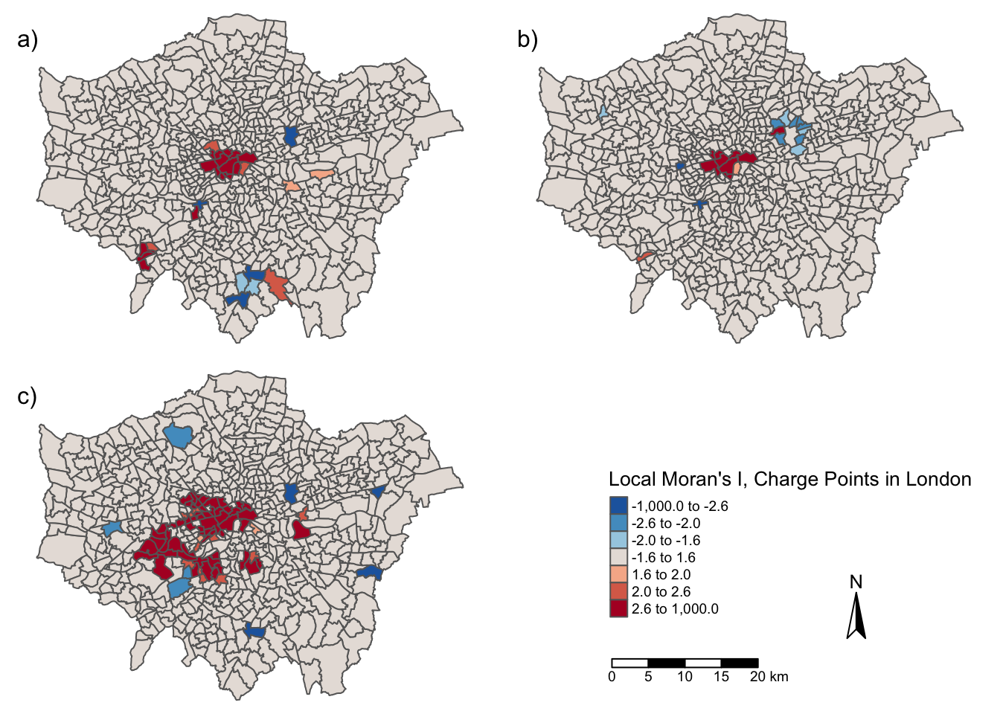
tmap_save(local_moran, "Local Moran's I, Charge Points in London.png")## Variable(s) "charge_count_Iz" contains positive and negative values, so midpoint is set to 0. Set midpoint = NA to show the full spectrum of the color palette.## Map saved to /Users/huoanni/OneDrive - University College London/GIS/temporal charge points/Local Moran's I, Charge Points in London.png## Resolution: 2100 by 2100 pixels## Size: 7 by 7 inches (300 dpi)Gi_ward_local_densityfun <- function(londonpointsyear){
ward_lw <- ward_lwfun(londonpointsyear)
Gi_ward_local_density <- londonpointsyear %>%
pointsjoinedfun(.) %>%
pull(density) %>%
as.vector()%>%
localG(., ward_lw)
density_Gi <- londonpointsyear %>%
pointsjoinedfun(.) %>%
mutate(density_G = as.numeric(Gi_ward_local_density))
return(density_Gi)
}tmap_Gifun <- function(londonpointsyear, number){
breaks1<-c(-1000,-2.58,-1.96,-1.65,1.65,1.96,2.58,1000)
GIColours<- rev(brewer.pal(8, "RdBu"))
density_Gi <- Gi_ward_local_densityfun(londonpointsyear)
tmap <- tm_shape(density_Gi) +
tm_polygons("density_G",
breaks=breaks1,
palette=GIColours,
title="Gi*, Charge Points in London") +
tm_legend(show=FALSE)+
tm_layout(frame=FALSE)+
tm_credits(number, position=c(0,0.85), size=1)
return(tmap)
}G1 <- tmap_Gifun(londonpoints2014, "a)")## `summarise()` ungrouping output (override with `.groups` argument)
## `summarise()` ungrouping output (override with `.groups` argument)
## `summarise()` ungrouping output (override with `.groups` argument)G2 <- tmap_Gifun(londonpoints2017, "b)")## `summarise()` ungrouping output (override with `.groups` argument)
## `summarise()` ungrouping output (override with `.groups` argument)
## `summarise()` ungrouping output (override with `.groups` argument)G3 <- tmap_Gifun(londonpoints2020, "c)")## `summarise()` ungrouping output (override with `.groups` argument)
## `summarise()` ungrouping output (override with `.groups` argument)
## `summarise()` ungrouping output (override with `.groups` argument)tmap_Gilegendfun <- function(londonpointsyear){
breaks1<-c(-1000,-2.58,-1.96,-1.65,1.65,1.96,2.58,1000)
GIColours<- rev(brewer.pal(8, "RdBu"))
density_Gi <- Gi_ward_local_densityfun(londonpointsyear)
legend <- tm_shape(density_Gi) +
tm_polygons("density_G",
breaks=breaks1,
palette=GIColours,
title="Gi*, Charge Points in London") +
tm_scale_bar(position=c(0.2,0.04), text.size=0.6)+
tm_compass(north=0, position=c(0.65,0.2))+
tm_layout(title = "Charge Points Gi* Density",
legend.title.size=1,
legend.text.size = 0.6,
legend.only = TRUE,
legend.position=c(0.2,0.25),asp=0.1)
return(legend)
}Gi_legend <- tmap_Gilegendfun(londonpoints2020)## `summarise()` ungrouping output (override with `.groups` argument)
## `summarise()` ungrouping output (override with `.groups` argument)
## `summarise()` ungrouping output (override with `.groups` argument)Gi <- tmap_arrange(G1, G2, G3, Gi_legend, ncol=2)
Gi## Variable(s) "density_G" contains positive and negative values, so midpoint is set to 0. Set midpoint = NA to show the full spectrum of the color palette.## Variable(s) "density_G" contains positive and negative values, so midpoint is set to 0. Set midpoint = NA to show the full spectrum of the color palette.
## Variable(s) "density_G" contains positive and negative values, so midpoint is set to 0. Set midpoint = NA to show the full spectrum of the color palette.
## Variable(s) "density_G" contains positive and negative values, so midpoint is set to 0. Set midpoint = NA to show the full spectrum of the color palette.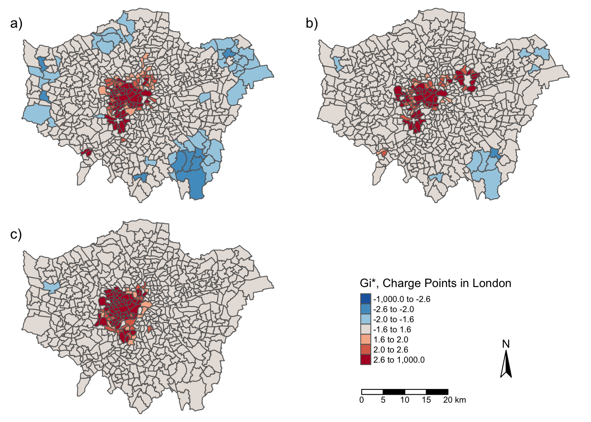